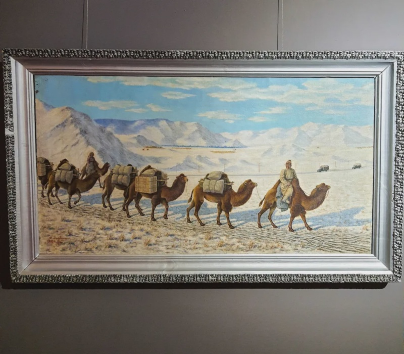

© ‘Camel Caravan’ by D.Damdinsuren
Last release of 2025! A present just in time for those celebrating Christmas. And this time, a very big package you’ll be happy to open! Camel K version 2.9.0 is bringing a lot of new features, improved traits and a new shiny GitOps operator assisted strategy. Let’s unfold it together.
GitOps operator side
During 2025 we have introduced several enhancements around GitOps. We had introduced the possibility to use a Kustomize based overlay structure already in the kamel promote CLI. In 2.9.0 we’re closing the circle and add some automation on the operator side, in order to transfer to the operator the responsibility to create the Integration overlay structure and push to a Git repository of your choice. We believe this is the definitive step to have a complete GitOps strategy driven by Camel K.
From now on, you can take care of building and testing the application as done usually and, automatically delegate to the GitOps feature the responsibility to push the changes which will be eventually taken by your CICD tooling (even on a different cluster!). We had thought on possible variants of this strategy in order to let you use it with a high degree of flexibility. The entire story is available in the official Camel K GitOps documentation page and we will probably come up with a more complete blog in the next months to explain it, even with more details.
And remind you can also build your application stored as a Git project: an real E2E Git journey that sets the base for the future Camel K.
Dry Build
Another big achievement in this release is the feature called Dry Build. This is another game changer as it introduces a clear separation between the Build phase and the Execution phase of a Camel application. With this feature you won’t be required any longer to Deploy and run the Integration after building it. Said in other terms, you can Build and package a Camel application ready to be Deployed without running it.
From now on you can separate clusters based on the responsibility, for example, segregate a “Build” cluster from the “Production” cluster.
Combined with the option of “Self Managed Build”, it can allow you to define very flexible pipelines.
New KEDA trait
We have revamped the old keda trait to be fully supported and integrated in the new future story of Camel K. The new trait resembles quite a lot to the previous one with a big difference. It is no longer bound to Kamelet only. We have worked on a nice automatic mapping mechanism to autodiscover any component and create a Scaler automatically with zero configuration. At the moment of writing, we have only one automatic scaler, Kafka. Feel free to use, ask for more, and possibly contribute yourself to new scalers (the development is really straightforward). Of course you can also configure manually your KEDA Scalers, while any needed automatic Scaler is still missing.
Safer kamel reset
The kamel reset CLI command is a nice development tool, as it makes easy to wipe it off all workloads on a development namespace. But, wait, was it really the development namespace!? worry not, from now on, you will be asked to introduce the namespace manually as a mean of security.
Pipe spec traits
So far we had the opportunity to configure traits in Pipe via annotations. We have decided to move directly into the spec as indeed, also the Pipes, need a certain degree of configuration that only traits are giving. From now on, you can use the very same logic we are using on the Integration spec. However, we advise to limit the usage of only the “Kubernetes” trait (ie, resource or cloud configuration) only as the goal of the Pipe is to be an abstraction from the generated Integration and a way to bind source and sink without knowledge around Camel specific implementation details.
NOTE: kamel bind -t option is available too!
Cross namespace resource bindings
Pipes allow you to bind sources and sinks resources. We have now introduced the possibility to refer cross namespaces resources in order to allow you using other namespace resources which the Pipe ServiceAccount must be authorized to. This is a fundamental security policy used to avoid Pipe uses resources you’re not allowed to use.
Kamelets distribution dependency
In this release we’re introducing the possibility to use a Maven Kamelet dependency directly in Camel K. This is bringing parity with local development approach you may be using with regular Camel and Camel JBang. Read more in the Kamelet distribution documentation page.
JVM CACert initialization
We are leveraging the presence of init-container trait introduced in recent version and added a new option on the jvm trait to easily enable the generation of a new JVM CACert right before the start of a new Camel application:
kamel run app.java \
-t mount.configs=secret:my-ca@/tmp/my-ca \
-t mount.configs=secret:my-password@/tmp/my-password \
-t jvm.ca-cert=/tmp/my-ca \
-t jvm.ca-cert-password=/tmp/my-password
The operator will be in charge of all heavy lift!
Deprecations
In this release we’re adding some deprecation. These are the traits we have decided to deprecate: logging, master, telemetry. They can all be configured easily via Camel properties, so, they no longer add too much value to the project. We have also deprecated kamel CLI delete, get and kit. The alternative is already available with kubectl CLI and similar.
Documentation
We added several resources. Here we want to highlight the new guide you can use as a reference to Debug Camel application in the cloud.
Main dependencies
The operator was built with Golang 1.25 and the Kubernetes API is aligned with version 1.34. We haven’t changed the Camel K Runtime LTS version (3.15.3, based on Camel 4.8.5): this is for backward compatibility reasons. As mentioned already since version 2.7, we’re pushing to the usage of plain-quarkus provider, which allow you to use any released Camel Quarkus version, or Git stored Camel projects.
Full release notes
Okey, that was a long ride. We have more minor things, fixes, documentation and dependency updates that you can check in the 2.9.0 release notes.
Stats
Here some stats that may be useful for development team to track the health of the project (release over release diff percentage):
- Github project stars: 903 (+1,5 %)
- Docker pulls over time: 2434805 (+1,8 %)
- Unit test coverage: 61.1 % (+10 %)
Thanks
Thanks a lot to our contributors and the hard work happening in the community. Feel free to provide any feedback or comment using the Apache Camel available channels.